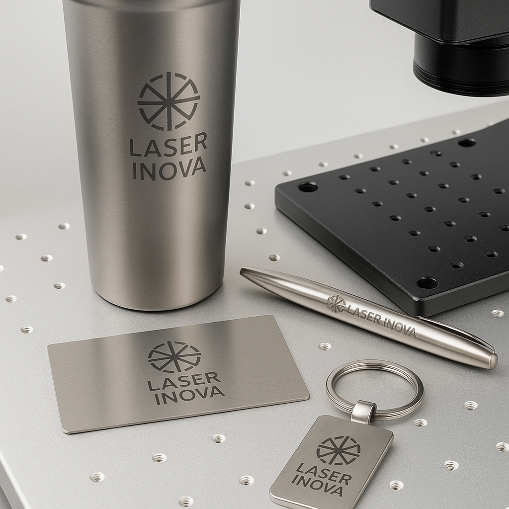

Grabado Láser en Metal en CDMX: Qué se Puede Hacer y Cómo se Ve
El grabado láser en metal es una técnica ideal para personalizar objetos metálicos con alta
precisión, permanencia y estilo. Desde termos, plumas y placas hasta piezas industriales o
regalos corporativos, este servicio se ha vuelto esencial en el mercado de personalización en
CDMX.
¿Qué metales se pueden grabar con láser?
- Acero inoxidable
- Aluminio anodizado
- Latón y cobre
- Hierro y acero al carbón
- Superficies pintadas o recubiertas

Diferencia entre láser de CO₂ y fibra óptica
Para grabar metal se necesita un láser de fibra óptica, ya que el láser de
CO₂ no tiene la potencia ni la longitud de onda adecuada para marcar metales de forma directa.
- Láser de fibra: Ideal para metales, rápido, duradero y con acabado profesional.
- Láser CO₂: No graba metal directamente (solo si está pintado o recubierto), pero es útil en
acrílico, madera y MDF.
Aplicaciones del grabado láser en metal
Este servicio es ideal tanto para uso personal como empresarial. Algunos ejemplos:
- Grabado de termos personalizados con logotipo
- Marcado de plumas y bolígrafos para regalos corporativos
- Grabado de carpetas, herramientas o placas industriales
- Identificación de piezas mecánicas o electrónicas

¿Sabías que el grabado con láser de fibra es tan preciso que puede grabar hasta códigos QR funcionales en acero
inoxidable?
Preguntas frecuentes sobre el grabado en metal
¿Qué tan profundo es el grabado?
Depende del material y del tipo de grabado. Generalmente es superficial pero permanente, aunque se puede
ajustar la potencia para mayor profundidad.
¿El grabado se borra con el tiempo?
No. Al ser una alteración directa en el material, no se despega ni se decolora. Resiste lavadas, rayones y uso
continuo.
¿Puedo llevar mis propios productos?
Sí, en Inova Laser puedes traer termos, carpetas, placas u otros objetos siempre que sean metálicos y planos.